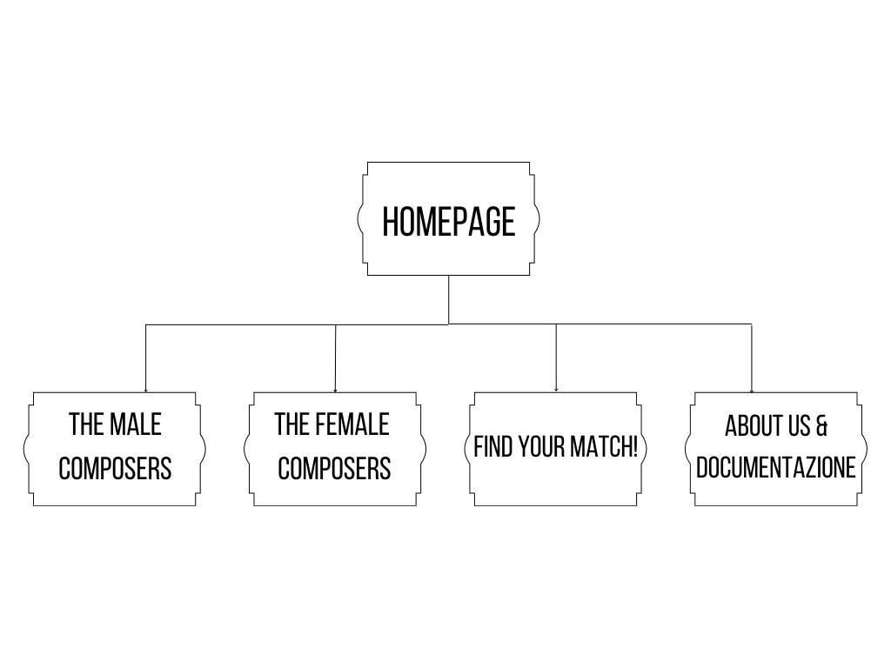
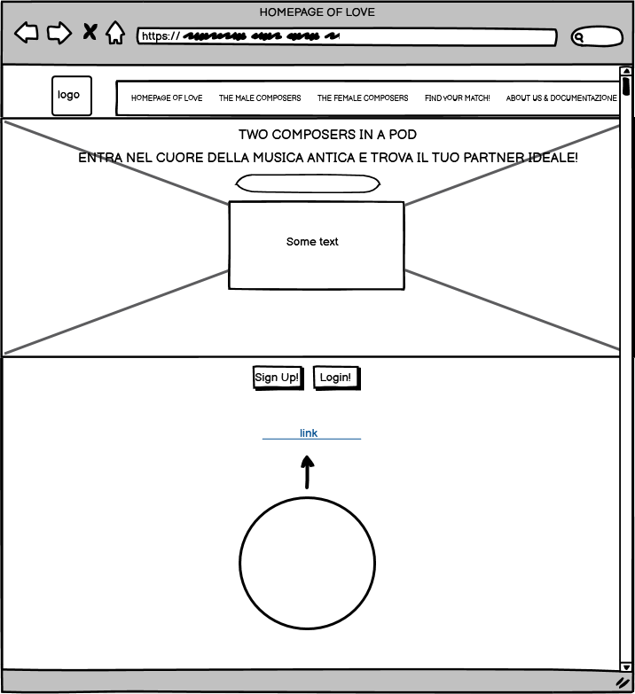
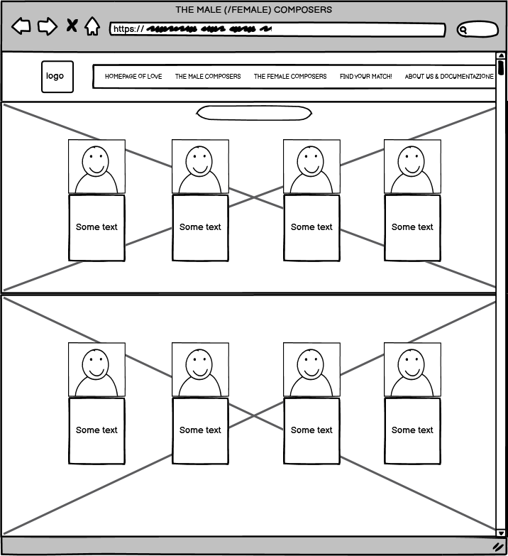
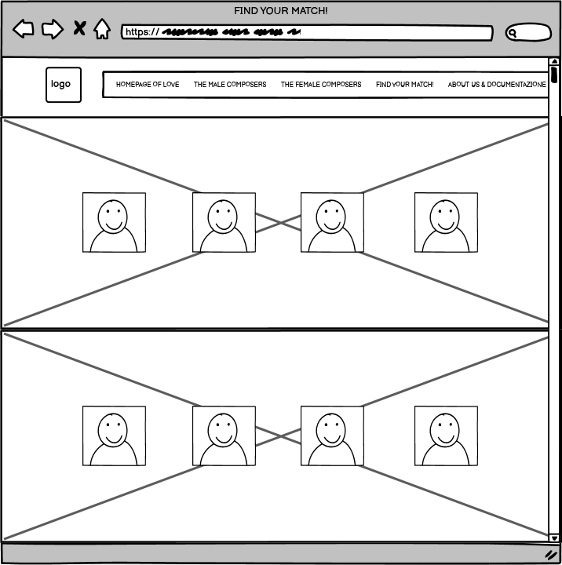
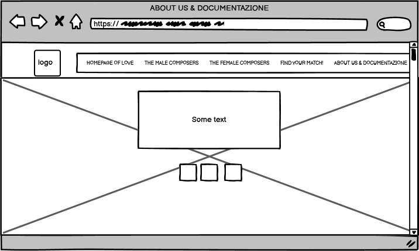
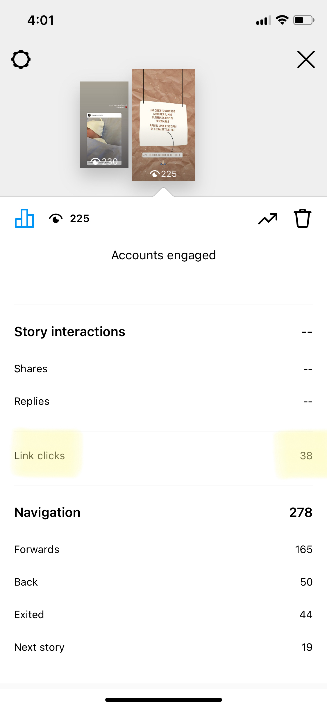
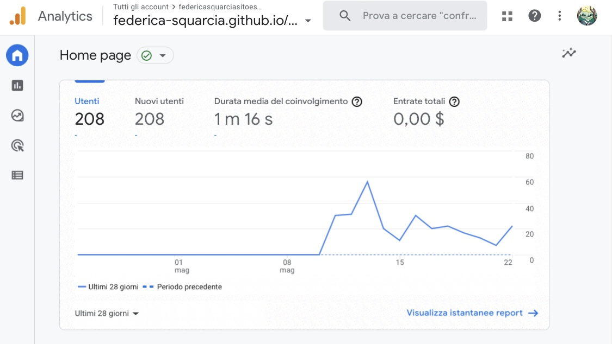
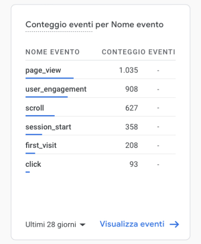

About Us
Questo sito web nasce come progetto finale del corso Informatica Umanistica, dell'Università di Bologna.
L'idea di fondo è stata quella di creare una sorta di Tinder o gioco dei match, al fine di trovare la perfetta anima gemella, nell'epoca dei grandi compositori e compositrici dell'epoca passata.
Il sito non pretende di essere perfetto, senza errori e con grandi prestazioni o servizi,
ma una piccola finestra nella quale entrare ogni tanto e divertirsi,
scoprendo, di volta in volta, qualche dettaglio o aspetto della vita passata di celebri artisti di musica classica.
Se ti è piaciuto e desiderli farlo conoscere a chi vuoi tu, non esitare e condividilo su tutti i social!
Abstract
Two Composers in a Pod è un sito realizzato con HTML5 e CSS. Facile da usare, intuitivo e responsive, si presenta come una piccola valvola di sfogo quotidiana per piccoli e grandi, con l’intenzione di rilassarsi, divertirsi e scoprire informazioni nuove ed interessanti circa artisti dell’epoca passata. Almeno una volta nella vita, tutti ci siamo chiesti “Se fossi vissuto in un’altra epoca, chissà chi sarei stato?”: con questo sito è ora possibile rispondere a tale domanda e scoprire il profilo, le qualità e l’anima gemella che ci avrebbero caratterizzati se fossimo vissuti nei secoli più sfarzosi ed eleganti della storia.
PROJECT MANAGEMENT PLAN
1. Benchmarking
a. Obiettivi:
La musica è un elemento fondamentale della vita di tutti noi, ci accompagna in ogni momento, brutto o bello che sia, e ci permette di ampliare le nostre conoscenze e, perché no, magari trovare anche il partner ideale. Così come succede oggigiorno, anche nei secoli scorsi l’amore e la musica erano protagonisti indiscussi. L’obiettivo di Two Composers in a Pod è quello di giocare con personaggi e personalità di grandi artisti del passato, ma anche di insegnare in modo divertente informazioni che non si conoscevano prima.
b. Target utente:
Il target utente di questo sito spazia dai giovani ragazzi e ragazze che vogliono distrarsi e divertirsi con i tanto apprezzati giochi di matching delle personalità, così come un pubblico più adulto, curioso di imparare e scoprire nozioni nuove riguardo un ambito poco conosciuto.
c. Competitors:
| TINDER | THE INNER CICLE | VAMPR | TASTEBUDS | SPOTIFY TINDER |
|---|---|---|---|---|
| App di incontri più famosa ed utilizzata da chiunque | App di incontri per professionisti e persone di successo | App di incontri per musicisti | App di incontri per amanti della musica | Incontro tra le due piattaforme |
| PRO: Facile da usare ed intuitiva, si crea in poco tempo e con semplici passi il proprio profilo | I profili che appaiono sono tutti di professionisti e di successo, grazie alle rigide regole e misure di sicurezza all’interno dell’app | Funziona come un social per musicisti e appassionati di musica, facendo swipe a dx e sx per trovare il giusto match | Per creare il profilo c’è la funzione “message bomb”, delle domande predefinite sulla musica per iniziare più facilmente una conversazione | Grazie all’unione delle due, adesso nei profili è possibile aggiungere un anthem, un inno, collegato direttamente al proprio account spotify |
| PRO: Possibilità di mettere like e superlike ad altri account e vedere se c’è un match con l’altra persona | La sezione eventi è molto utile per partecipare a feste esclusive, comprare biglietti, promuovere una festa e invitare persone | È possibile collegare al proprio profilo gli account di youtube e soundcloud per caricare la propria musica prodotta, ascoltare quella altrui e chiedere di collaborare con altri musicisti | Funziona come una sorta di social media, si posta diverse volte durante la giornata ciò che si sta ascoltando, pe facilitare i match | È possibile collegare come inno un podcast, in mood tale da “raccontarsi meglio” alle altre persone e fare mach ancora più diretti |
| CONTRO: troppa pubblicità nella versione gratuita, questa scompare solo se si paga un abbonamento | Per registrarsi occorre diverso tempo e la compilazione di un test della personalità molto lungo | Non esiste la versione web come le altre app, ma solo per piccoli dispositivi, riducendo l’esperienza massima di schermi maggiori | Nella creazione del profilo si possono aggiungere poche info personali oltre ai gusti musicali | La novità consiste esclusivamente nel poter aggiungere questo collegamento e nient’altro |
| CONTRO: Nonostante si metta il filtro per la distanza, appaiono ugualmente profili molto lontani | Se non si fa l’abbonamento (disponibile solo in versione settimanale), non è possibile usare le funzioni della chat (scrivere messaggi, leggerli e mandarli) | La qualità del suono sull’app è buona, ma potrebbe essere migliorata con la versione web | Per il momento l’app è disponibile solo per dispositivi iOS | Se si vuole trovare qualcuno in base ai gusti musicali, conviene usare app d’incontri appositi e più precisi |
2. Struttura e Layout
a. Architettura del sito:
b. Wireframe:
   c. Look and Feel:
Essendo questo sito basato su artisti di epoca moderna, nel mio immaginario ho identificato un ambiente sfarzoso e colorato, ricco di addobbi e abiti eleganti; dunque, per andare in contro a questa mia fantasia e utilizzando il tool Adobe Color, sono riuscita a trovare una palette di colori adeguata e basata sulle tonalità e sfumature del rosa, oscillando dal rosa confetto al rosa lampone.
Il logo, posizionato in alto a sinistra nella barra del menu principale, e il titolo principale recitano “Two Composers in a Pod”: la scelta di questo particolare titolo deriva dal detto inglese “two peas in a pod”, ovvero due piselli in un baccello, utilizzato quando due persone sono fatte per stare l’una con l’altra; dunque, dato che nel mio sito l’obiettivo principale è trovare l’anima gemella nel mondo della musica classica, ho deciso di adattare tale detto e farlo “mio”, ideando e creando, in aggiunta, il logo dedicato.
Nella homepage e nelle due pagine in cui gli artisti sono elencati vi sono, in alto al centro, dei piccoli tab con la possibilità di ascoltare dei brani di musica classica: questa scelta di inserire dei contenuti audio è stata dettata dalla volontà di creare un’atmosfera unica e coinvolgente per l’utente del sito.
Infine, anche il font qui utilizzato (“Indie Flower”) è stato scelto con la medesima intenzione.
LINGUAGGI E STRUMENTI
a. Linguaggi:
HTML e CSSb. Strumenti:
COMMUNICATION STRATEGY
1. Background:
A differenza degli altri siti o app di incontri presenti sul web, Two Composers in a Pod si presenta non come un punto d’incontro reale, in cui trovare la vera anima gemella, ma piuttosto come un ambiente virtuale in cui essere, anche solo per un attimo, qualcun altro. Infatti, a differenza dei competitors analizzati, in cui si crea un account basandosi sempre (o, almeno, verosimilmente) sulle proprie caratteristiche effettive e si entra in contatto con altre persone, nel mio sito è possibile astrarsi momentaneamente da questa situazione reale e trascendere nella fantasia: invece che creare un profilo ufficiale, una ruota della fortuna ci associa in modo casuale un’identità già esistente. Così, lasciamo il nostro destino nelle mani del caso, fingendo di essere qualcun altro e vivendo una vita totalmente diversa, senza causare danni ad altri… come noi tutti, ogni tanto, desideriamo poter fare.
2. Obiettivi comunicativi:
L’obiettivo di questo sito, presentandosi con un linguaggio e un layout chiari, semplici e spiritosi, è quello di divertire e istruire i suoi utenti con informazioni riguardanti compositori e compositrici di musica classica.
3. Target, audience e messaggio:
PROMOZIONE
Il miglior modo per poter promuovere questo sito web è sicuramente l’utilizzo di social media e, nello specifico, Instagram con la funzione delle “stories”. In aggiunta, anche il passaparola tra amici e chi l’ha già provato, così come la condivisione dell’url del sito in chat sulla piattaforma Whatsapp.
VALUTAZIONE DEI RISULTATI
Gli obiettivi prefissati inizialmente sono stati raggiunti. Infatti, attraverso l'uso del social Instagram, il sito web è stato promosso grazie alla funzione delle storie, raggiungendo 38 su 30 click richiesti.
Inoltre, grazie alla promozione su Whatsappe e grazie al passaparola, sono stati raggiunti 208 utenti in totale, superando ampiamente l'obiettivo iniziale di 100.


